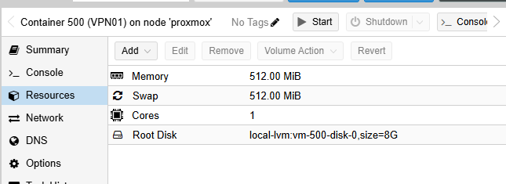
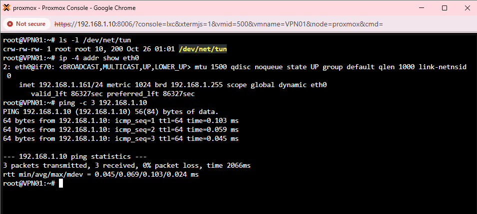
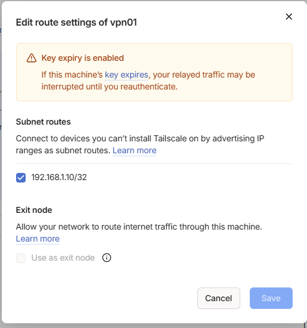
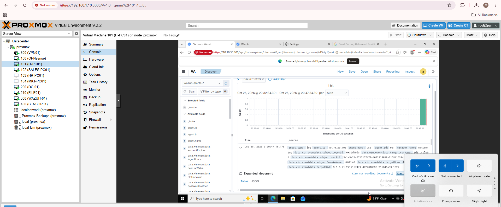
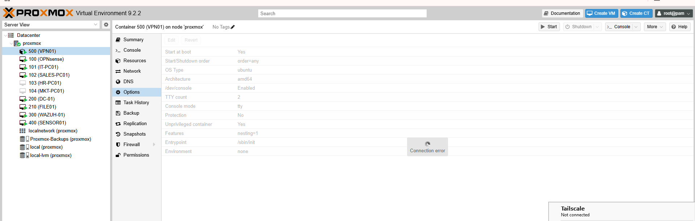
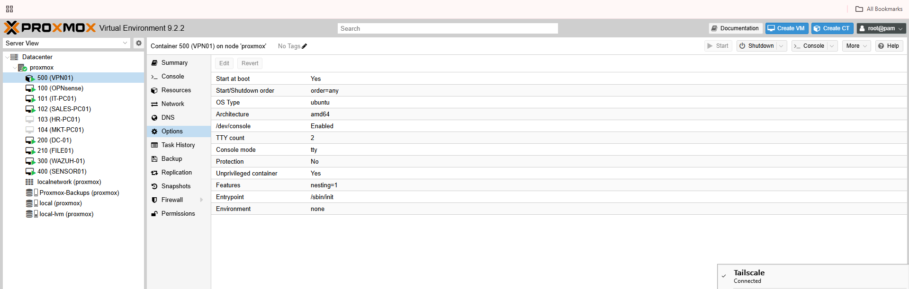
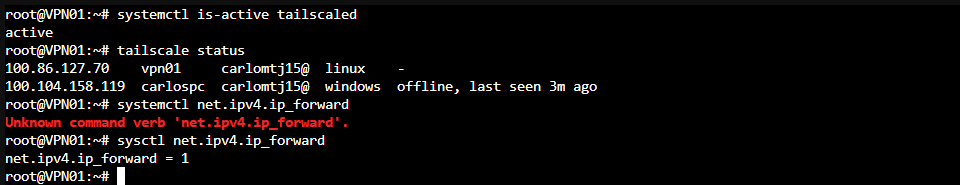
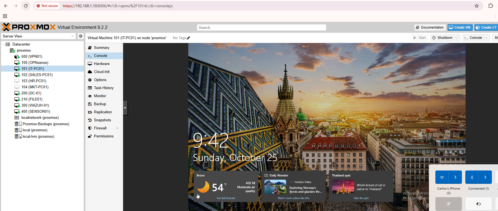

SUPPORTING INFRASTRUCTURE / REMOTE01
Secure Proxmox Remote Access with Tailscale
I built a private remote-management path to my Proxmox server so I could work on the homelab away from home without exposing the Proxmox web interface through a public router port-forward.
THE PROBLEM
Remote access without publishing Proxmox to the internet
My cybersecurity projects run on a Proxmox server at home. I wanted to continue building and testing while away, but I did not want to create a public port-forward to the Proxmox management interface.
The solution also had to fit the infrastructure I already had in place, including my ISP router and the lab OPNsense VM.
DESIGN
A separate gateway instead of installing VPN software on the host
I created VPN01, an unprivileged Ubuntu 24.04 LXC container attached to the Proxmox management bridge. Tailscale runs inside the container rather than directly on the Proxmox host.
VPN01 received a TUN device for Tailscale and persistent IPv4 forwarding. Instead of advertising the full home subnet, it advertises only the Proxmox management address as a /32 route.
GATEWAY SETUP
A small Linux container on the management network
I downloaded the Ubuntu 24.04 standard LXC template and created container 500 as VPN01, with one CPU core, 512MB RAM, 512MB swap, and an 8GB root disk. Its eth0 interface connects to vmbr0 with IPv4 DHCP and no VLAN tag.
While the container was stopped, I added /dev/net/tun through Proxmox Device Passthrough. After starting it, I verified the TUN device, the assigned address, and connectivity to the Proxmox management host before installing Tailscale.




I installed Tailscale inside VPN01 and on the Windows laptop, enrolled both with my personal account, enabled persistent IPv4 forwarding, and approved 192.168.1.10/32. Exit-node mode remained off.
VPN01 is configured to start at boot. I disabled gateway key expiry to avoid unattended reauthentication interrupting access. The tested recovery covers the container reboot, not a full host restart.
ACCESS CONTROL
Limit the path to the device and service I actually needed
The initial Tailscale policy was broad. I replaced it with a grant that permits the registered laptop to reach the Proxmox management host on TCP 8006.
| Control | REMOTE01 decision |
|---|---|
| Source | Registered Windows laptop in the Tailscale network |
| Destination | Only the Proxmox management host |
| Route scope | Single-host /32 route instead of the entire home subnet |
| Permitted service | TCP 8006 for the Proxmox web interface and browser consoles |
| Public exposure | No public Proxmox port-forward or Dynamic DNS configuration added |
Proxmox still requires its normal application login. The Tailscale policy controls the network path; it does not replace Proxmox authentication.


VALIDATION
Test the path from a different internet connection and after failure
| Test | Observed result |
|---|---|
| Phone hotspot + Tailscale connected | Proxmox dashboard and browser VM console worked remotely |
| Disconnect Tailscale | Remote Proxmox connectivity failed |
| Reconnect Tailscale | Remote access returned |
| Restart VPN01 | Tailscale service and IPv4 forwarding recovered automatically; remote access worked again |
This confirmed that the remote session depended on the VPN path and that the gateway could recover after a container reboot without repeating registration or setup.
SELECTED EVIDENCE
The management workflow and its recovery
The PDF follows the full implementation and includes the policy and command sequence. These views show the key behaviors. Screenshots are cropped to relevant results without changing settings or output.










LESSONS AND TRADEOFFS
Verify the workflow and keep the route narrow
The VM console test mattered because a dashboard login alone would not prove I could continue a lab project. The hotspot removed the normal home-network path, and the disconnect/reconnect test confirmed that the session depended on Tailscale.
A single-host route and TCP 8006 grant supplied the workflow I needed. Direct access to the lab VLANs was unnecessary for browser consoles. The gateway remains an operational dependency, so backups and a future full-host recovery test are worthwhile next steps.
OPERATING LIMITS
Document what I tested and what I did not
A full Proxmox-host reboot recovery test was not performed. I configured VPN01 to start at boot, but the completed recovery test covered the container reboot only.
I also did not independently test every denied port or a separate unauthorized device. Those boundaries come from the configured policy and are not presented as completed validation.
WHY I KEPT THIS PROJECT
A practical improvement to the lab itself.
REMOTE01 is smaller than the main domain projects, but it demonstrates Proxmox administration, Linux networking, subnet routing, scoped remote access, operational testing, and clear documentation of validation limits.